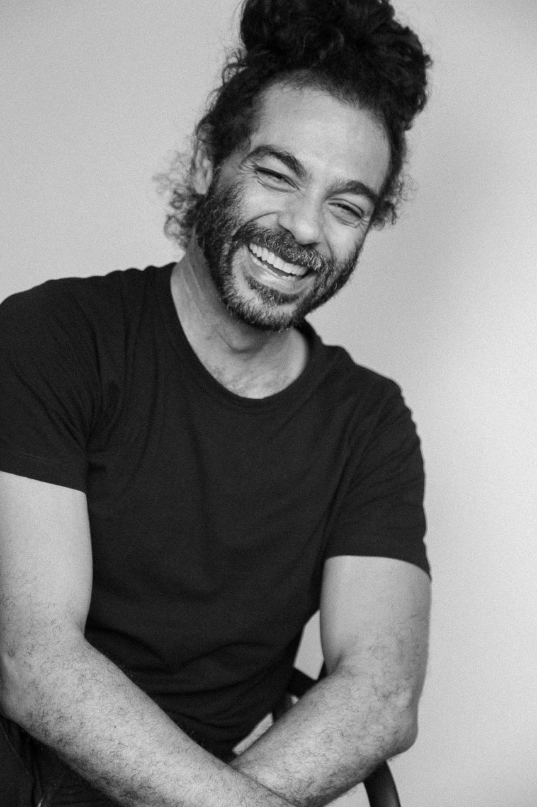
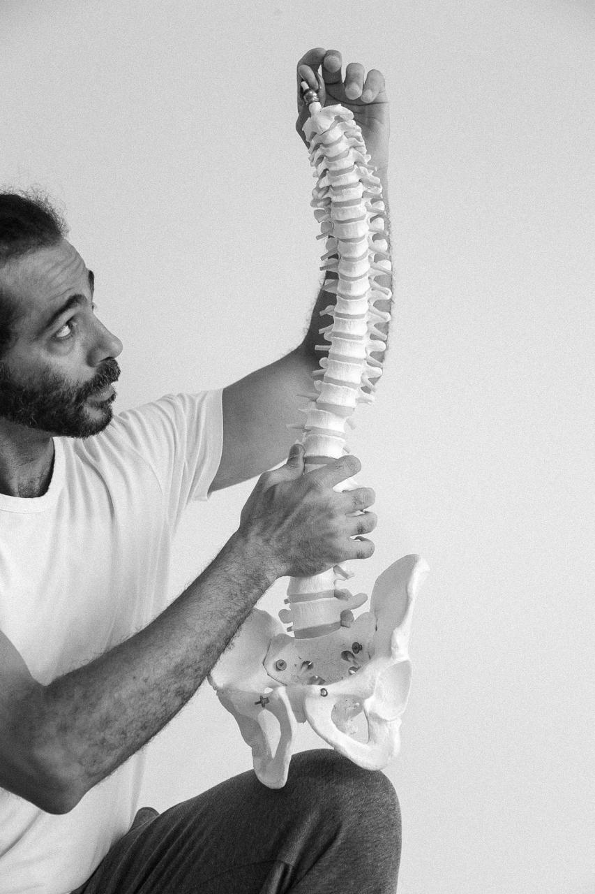
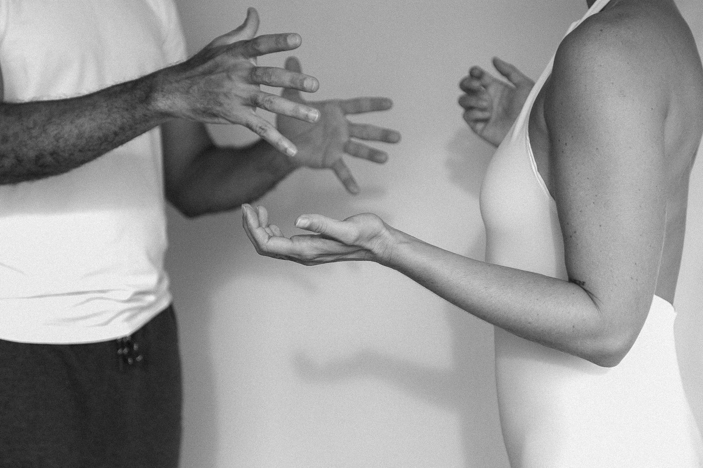
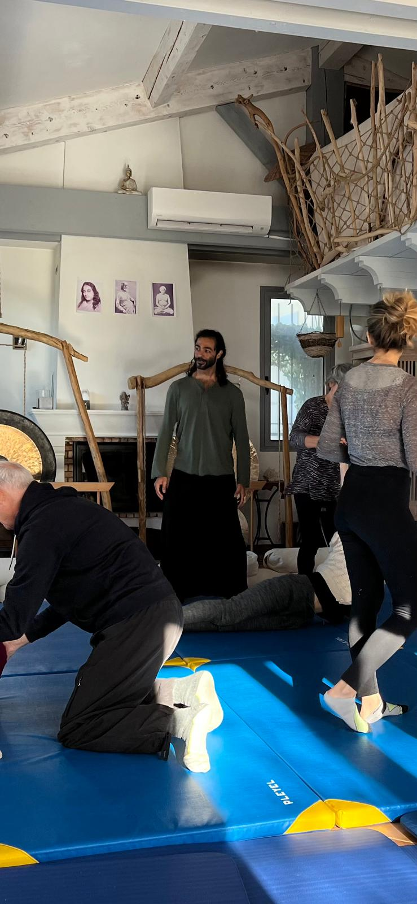

Founded and Led by Alex Mendes
Body · Care · Relationships
Three Arches is a company built on three interconnected pillars—body, care, and relationships. Grounded in the field of somatics, it develops services, experiences, and processes that cultivate more conscious, relational, and sustainable ways of living, working, and being together.
Explore Services
I am someone who believes that all transformation begins with encounter.
I was born and raised in one of the most vulnerable communities in Rio de Janeiro, where I learned early on that it is through open-hearted relationships, deep listening, and creativity that we transform limitations into bridges.
Today, I design experiences that bring together body, care, and collectivity—bridging human needs with the real demands of both individual and corporate environments. My work moves between communities and companies, always with the purpose of inspiring more conscious, healthy, and meaningful relationships aligned with the social, economic, and environmental challenges we face.
I believe in the power of living dialogue to transform cultures, ways of working, and ways of caring.
The core of my work lies in the field of somatics—practices that place the body as a space for listening, expression, and transformation.
From this foundation, I develop different yet interconnected paths: massage, manual therapy, somatic regulation, and group facilitation. These services can be offered individually or integrated, creating unique experiences for individuals, companies, and collectives.
In practice, my work creates spaces for presence and connection. Whether through individual therapeutic touch, which promotes well-being and self-regulation, or through collective processes that strengthen cooperation, non-verbal communication, and co-creation—the intention remains the same: to cultivate more human, healthy, and collaborative relationships.
By bringing the body to the center of experience, we support not only personal care, but also more sustainable, creative, and conscious work cultures.
Promote relaxation, release of tension, and physical and emotional balance. In corporate environments, they enhance well-being, increase energy levels, reduce stress, and prevent burnout.
Learn morePractices that help recognize and reorganize physical and emotional patterns, supporting resilience and clarity. They help individuals and teams navigate challenges, pressure, and change more effectively.
Learn moreCollective experiences involving body awareness, self-regulation, and non-verbal communication. Strengthens cooperation, empathy, communication, and co-creation through relational intelligence.
Learn more
Massage therapy integrates classical techniques (relaxation, sports, deep tissue, Thai massage) with an original somatic approach called the Spiral Layers Technique, combining joint mobilization, manipulation, myofascial release, and trigger point therapy.
Manual therapy is applied through subtle somatic touch and body mobilization, releasing physical and emotional tension while promoting body–mind integration.
To provide integrative care that releases tension, regulates the nervous system, and expands body awareness.

Sessions inspired by the methodology of Stanley Keleman, helping to recognize body-based emotional patterns that shape behavior and relationships. This work reorganizes these patterns from within, strengthening self-regulation, behavioral restructuring, and more conscious choices.
To deepen awareness of the connection between body, behavior, and relationships, enabling sustainable changes in how we relate to ourselves, others, and professional environments.

Collective processes using techniques from Contact Improvisation, somatic co-regulation, and active listening. These are embodied and creative practices applied to strengthen human relationships in work and community contexts.
To enhance non-verbal communication, empathy, and co-creation within groups—bridging communication, assertiveness, and cooperation while developing more intuitive and conscious collaboration.
Combination of Massage/Manual Therapy sessions for employees + Group Facilitation modules.
Supports both individual well-being and team integration.
Somatic Behavioral Regulation processes for leaders or teams + Group Facilitation.
Supports cultural transformation and emotional health.
Integration of all three services in a monthly structure (individual sessions + group workshops).
A pathway for companies seeking consistent investment in well-being, engagement, and innovation.